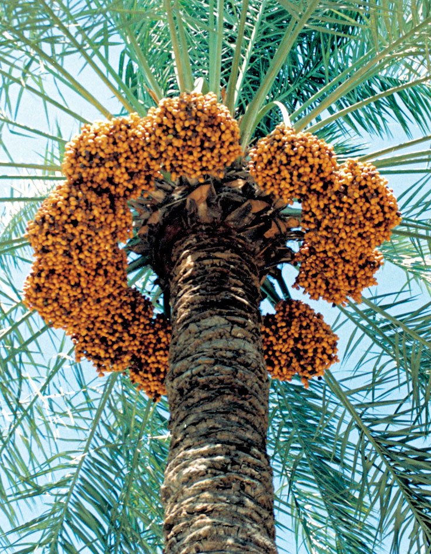
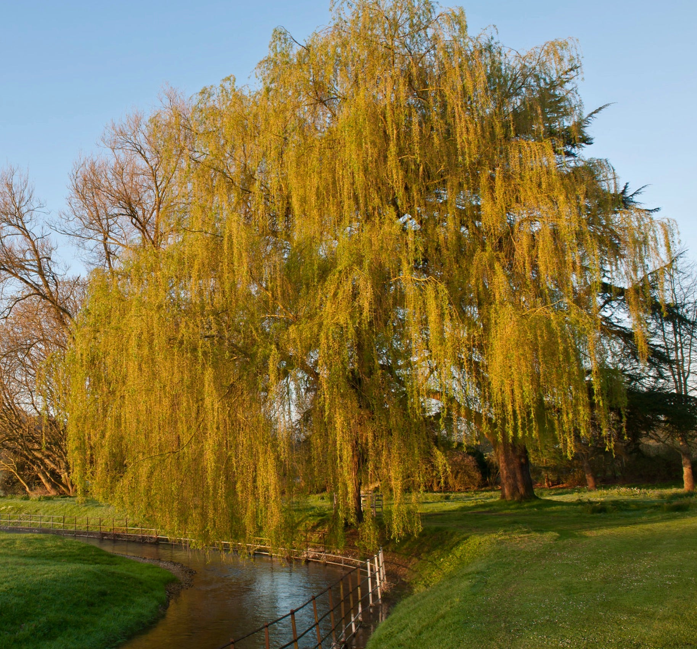
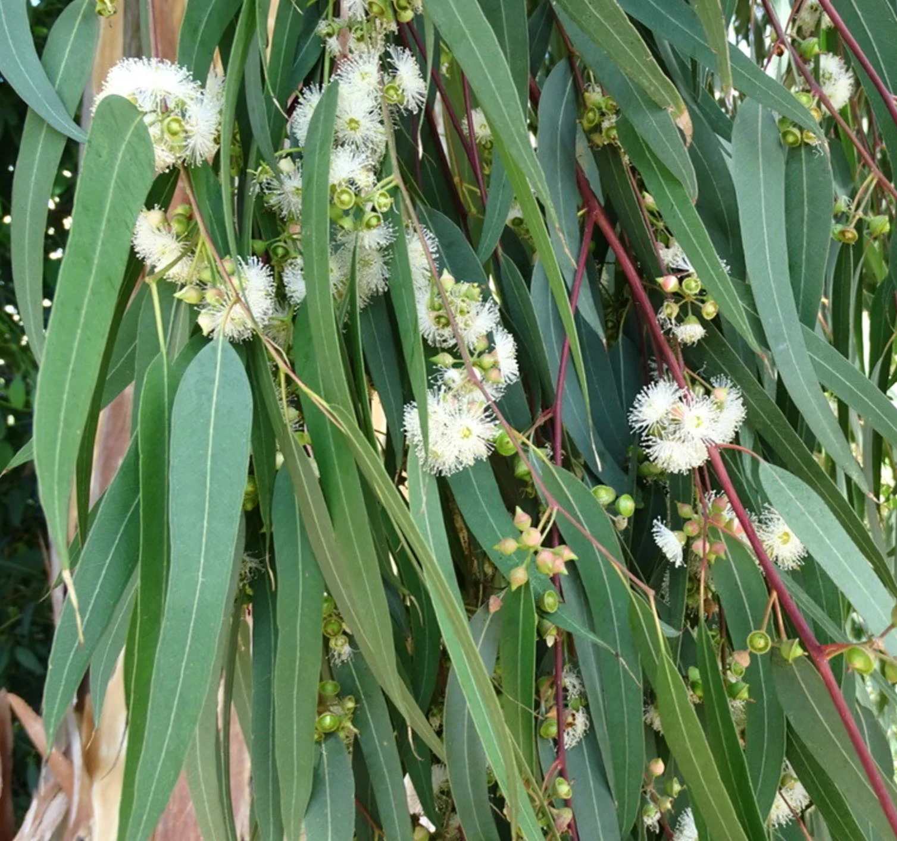
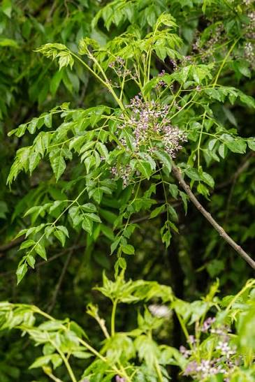
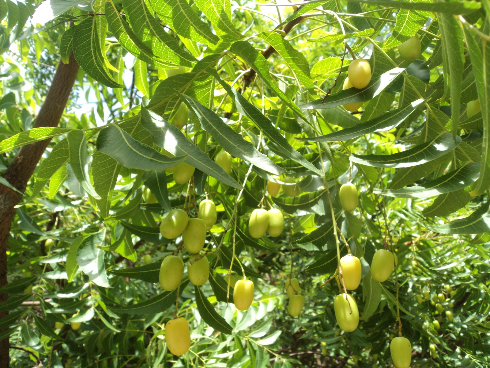
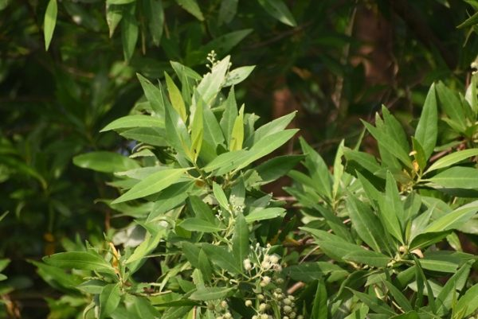

ديوان الأشجارTree Almanac
سجلٌّ حيّ لأشجارنا التي نزرعها؛ قصتها البيئية، والطريقة العلمية الصحيحة لإنبات بذورها.
A living record of the trees we plant — their ecological story, and the correct scientific method for germinating their seeds.

شجرة السدرSidr Tree
مستوطنةNative
أيقونة الطبيعة العراقية ومستوطنة أصيلة منذ آلاف السنين، تواجه تهديداً مرتفعاً من القطع الجائر... An icon of Iraq's natural landscape, native for thousands of years, now facing a high threat from indiscriminate logging...
تعرّف عليها أكثر ←Learn More → تحدي: الاستهلاك المائيChallenge: Water Consumption
شجرة الألبيزياAlbizia Tree
دخيلةIntroduced
شجرة دخيلة مستأنسة سريعة النمو، ليست مهددة بالانقراض لكنها تحتاج إدارة مائية ذكية... A fast-growing, naturalized non-native tree — not endangered, but requiring smart water management...
تعرّف عليها أكثر ←Learn More → تحدي: التجريف العمرانيChallenge: Urban Encroachment
نخلة التمرDate Palm
مستوطنةNative
الأيقونة البوتانيكية لبلاد الرافدين، تعمل كـ"شجرة مظلة" لكنها تواجه تجريفاً عمرانياً لبساتينها التاريخية... The botanical icon of Mesopotamia, functioning as an 'umbrella tree' but facing urban clearing of its historic orchards...
تعرّف عليها أكثر ←Learn More → تهديد وجودي: الارتهان المائيExistential Threat: Water Dependency
الحور الفراتيEuphrates Poplar
مستوطنةNative
صمود استثنائي بوجه الملوحة والجفاف، لكن السدود وانخفاض المناسيب تقطع أوصال مواطنه الطبيعية... Exceptional resilience against salinity and drought, yet dams and falling water levels are fragmenting its natural habitat...
تعرّف عليها أكثر ←Learn More → تجريف لأغراض صناعيةCleared for Industrial Projects
الأثل (الطرفاء)Athl (Tamarisk)
مستوطنةNative
الحارس الجيني للأراضي القاحلة، تعمل كمصد رياح طبيعي لكنها تُعامل كعائق أمام المشاريع الصناعية... A genetic guardian of arid lands, serving as a natural windbreak, yet treated as an obstacle to industrial projects...
تعرّف عليها أكثر ←Learn More → تلوث مائي يفوق قدرتهاWater Pollution Beyond Capacity
الصفصاف العراقيIraqi Willow
مستوطنةNative
منقّي طبيعي للمجاري المائية عبر المعالجة الحيوية، لكن التلوث الصناعي يفوق قدرته على التنقية... A natural purifier of waterways through phytoremediation, now overwhelmed by industrial pollution...
تعرّف عليها أكثر ←Learn More → قطع جائر وحرائقLogging & Wildfires.jpg)
البلوط (السنديان)Oak
مستوطنةNative
ركيزة التوازن الجبلي بكردستان، حجر زاوية للتنوع الحيوي، تتعرض لقطع جائر وحرائق تهدد النظام البيئي بالكامل... A pillar of mountain balance in Kurdistan and keystone of biodiversity, now facing logging and fires that threaten the whole ecosystem...
تعرّف عليها أكثر ←Learn More → رعي جائر يمنع التجددOvergrazing Prevents Regeneration.jpg)
البطم (الملول)Pistacia (Terebinth)
مستوطنةNative
شجرة رائدة بطيئة النمو تفتت الصخور لتكوّن التربة، يمنع الرعي الجائر تجدد شتلاتها الصغيرة... A slow-growing pioneer species that breaks down rock to form soil, its regeneration now blocked by overgrazing...
تعرّف عليها أكثر ←Learn More → منافس مائي وأضرار بنيويةWater Competitor & Infrastructure Damage
الأوكالبتوس (الكافور)Eucalyptus
دخيلةIntroduced
نتح عالي جداً يجففه المستنقعات، لكنه بمناخ العراق منافس مائي يضر الأساسات الخرسانية القريبة... Extremely high transpiration makes it excellent at drying swamps, but in Iraq it competes for water and can damage nearby concrete foundations...
تعرّف عليها أكثر ←Learn More → لا تواجه تهديدات — شجرة صبورةNo Significant Threats — Resilient Tree
الزنزلختMelia Azedarach
دخيلةIntroduced
كيمياء طبيعية طاردة للحشرات وقدرة تكيف عالية، شجرة صبورة لا تواجه تهديدات وخيار مثالي للتظليل الحضري... Natural insect-repelling chemistry and high adaptability — a resilient tree with no significant threats and an ideal urban shade option...
تعرّف عليها أكثر ←Learn More → حساسة للصقيع بالسنوات الأولىFrost-Sensitive in Early Years
النيمNeem
دخيلةIntroduced
مخزن للمركبات النشطة بيولوجياً كالأزاديراكتين، شجرة مستقبلية للعراق إذا حُميت خلال الشتاء القاسي... A reservoir of bioactive compounds like azadirachtin — a tree of the future for Iraq if protected during harsh winters...
تعرّف عليها أكثر ←Learn More → أضرار هندسية بالبنية التحتيةInfrastructure Engineering Damage
الكونوكاربسConocarpus
دخيلةIntroduced
قدرة استثنائية بامتصاص الكربون، لكن جذوره تنجذب للرطوبة بقوة وتسبب خللاً هندسياً بالبنية التحتية... Exceptional carbon absorption, but its roots aggressively seek moisture, causing engineering disruption to infrastructure...
تعرّف عليها أكثر ←Learn More →